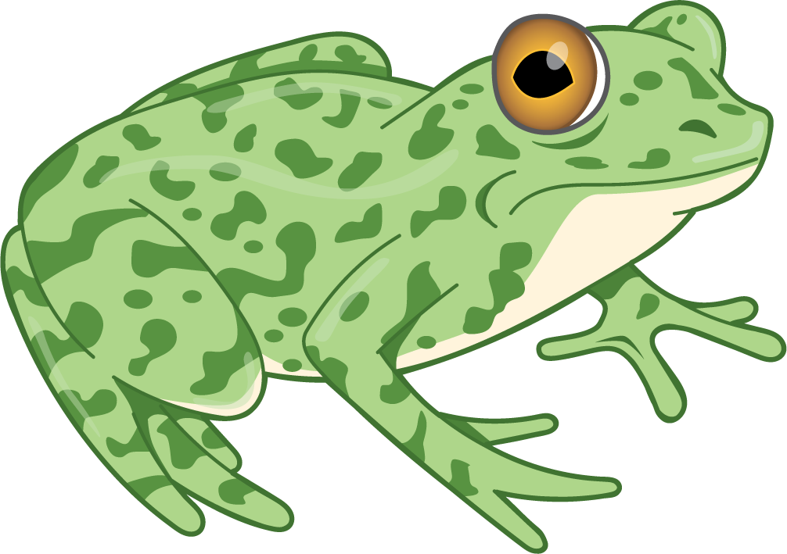
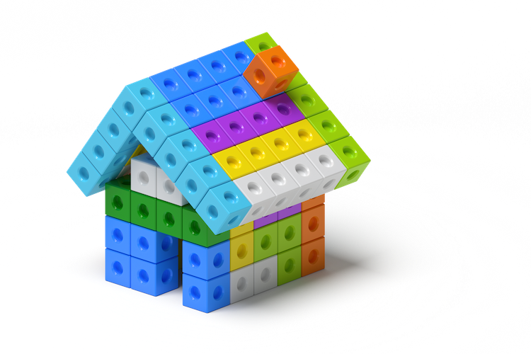
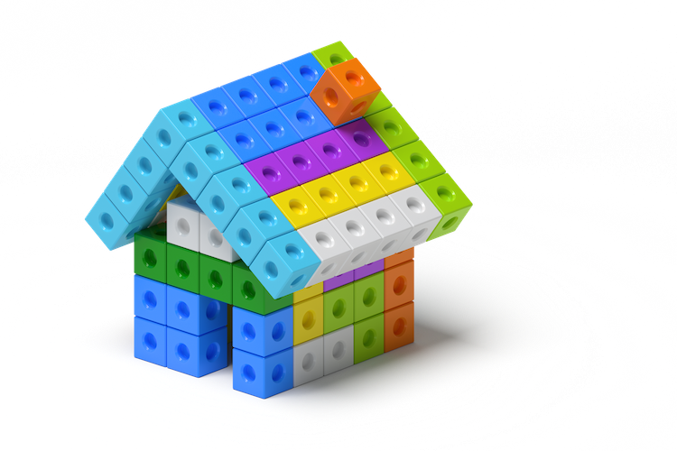

Sección B - Reconozcamos cantidades Lección 6 - Busquemos grupos pequeños Calentamiento (10 mins)
Calentamiento14.Actuémoslo: Introducción.
3 patitos muy lejos de aquí a la colina salieron a pasear. Mamá pata dijo: “Cuac, cuac, cuac”. Después 3 patitos vio regresar.
Actividad 1 (10 mins)
Actividad15.Cuántos ves: Introducción.
¿Cuántos ves? ¿Cómo lo sabes?, ¿qué ves?
Actividad 2 (10 mins)
Actividad16.Conozcamos “Libros de imágenes: Explora”.
Busquen grupos de cosas en su libro.
Actividad 3 (25 mins)
Actividad17.Centros: Momento de escoger.
Cubos Encajables
Fichas Geométricas
Bloques sólidos geométricos
Libros de imágenes
Lección 7 - Juego de búsqueda en el salón de clase Calentamiento (10 mins)
Calentamiento18.¿Cómo lo podemos mostrar?
3 patitos muy lejos de aqui a la colina salieron a pasear. Mamá pata dijo: “Cuac, cuac, cuac”. Después 3 patitos vio regresar.
Actividad 1 (10 mins)
Actividad19.Cuántos ves: Dos imágenes.
¿Cuántos ves? ¿Cómo lo sabes?, ¿qué ves?
Actividad 2 (10 mins)
Actividad20.Juego de búsqueda en el salón de clase.
Busca 3 objetos en nuestro salón.
Actividad 3 (25 mins)
Actividad21.Centros: Momento de escoger.
Escoge un centro.
Cubos Encajables
Fichas Geométricas
Bloques sólidos geométricos
Libros de imágenes
Lección 8 - Grupos diferentes, misma cantidad Calentamiento (10 mins)
Calentamiento22.Actuémoslo: Otra manera.
3 patitos muy lejos de aquí a la colina salieron a pasear. Mamá pata dijo: “Cuac, cuac, cuac.” Después 3 patitos vio regresar.
Actividad 1 (10 mins)
Actividad23.Cuántos ves: 1, 2, 3.
¿Cuántos ves? ¿Cómo lo sabes?, ¿qué ves?
Actividad 2 (10 mins)
Actividad24.Grupos diferentes, misma cantidad.
Actividad 3 (25 mins)
Actividad25.Centros: Momento de escoger.
Escoge un centro.
Cubos Encajables
Fichas Geométricas
Bloques sólidos geométricos
Libros de imágenes
Lección 9 - Hagamos libros de imágenes Calentamiento (10 mins)
Calentamiento26.Actuémoslo: La historia cambia.
3 patitos muy lejos de aquí a la colina salieron a pasear. Mamá pata dijo: “Cuac, cuac, cuac.” Después 3 patitos vio regresar.
3 patitos muy lejos de aquí a la colina salieron a pasear. Mamá pata dijo: “Cuac, cuac, cuac.” Después 2 patitos vio regresar.
Actividad 1 (10 mins)
Actividad27.Cuántos ves: ¿Qué observas?
¿Cuántos ves? ¿Cómo lo sabes?, ¿qué ves?
Actividad 2 (10 mins)
Actividad28.Conozcamos “Libros de imágenes: Crea”.
Dibuja cosas de nuestro salón de las que haya dos.
Actividad 3 (25 mins)
Actividad29.Centros: Momento de escoger.
Escoge un centro.
Cubos Encajables
Fichas Geométricas
Bloques sólidos geométricos
Libros de imágenes
Sección C - ¿Hay suficientes? Lección 10 - Cuántos ves: Construyamos sobre lo aprendido Calentamiento (10 mins)
Calentamiento30.Cuántos ves: Construyamos sobre lo aprendido.
¿Cuántos ves? Cómo lo sabes?, ¿qué ves?
Actividad 1 (10 mins)
Actividad31.Actuémoslo: Cuatro ranitas manchadas (parte 1).

4 ranitas manchadas se sentaron en un tronco manchado a comer los más deliciosos bichos. ¡Yum! ¡Yum! 1 saltó al lago, que estaba agradable y fresco. Ahora hay 3 ranitas verdes manchadas. ¡Glub! ¡Glub!
Actividad35.Actuémoslo: Cuatro ranitas manchadas (parte 2).
4 ranitas manchadas se sentaron en un tronco manchado a comer los más deliciosos bichos. ¡Yum! ¡Yum! 1 saltó al lago, que estaba agradable y fresco. Ahora hay 3 ranitas verdes manchadas. ¡Glub! ¡Glub!


 
